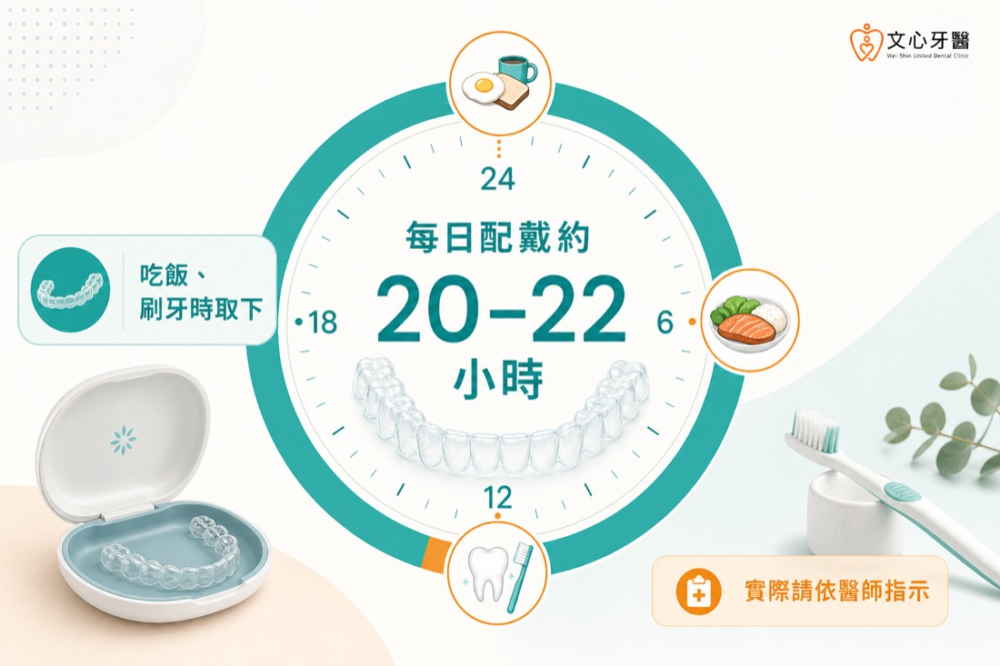
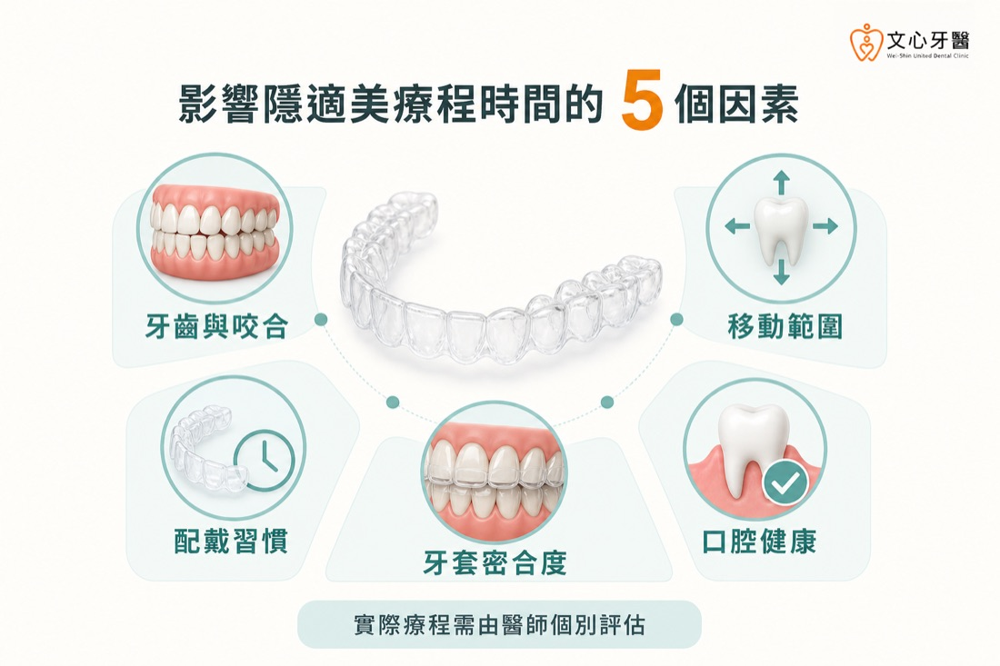
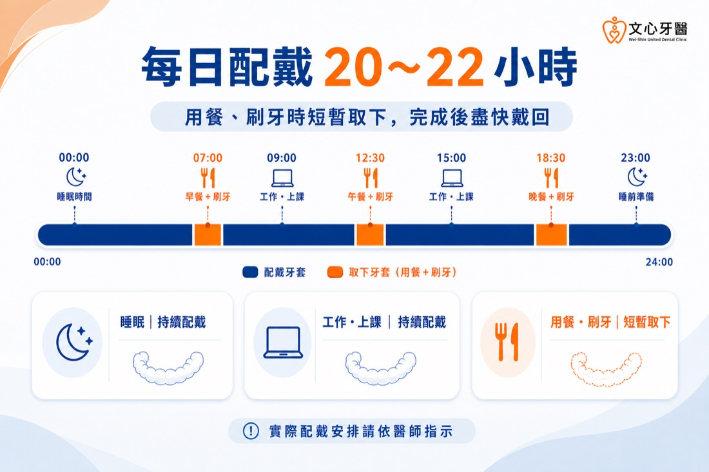
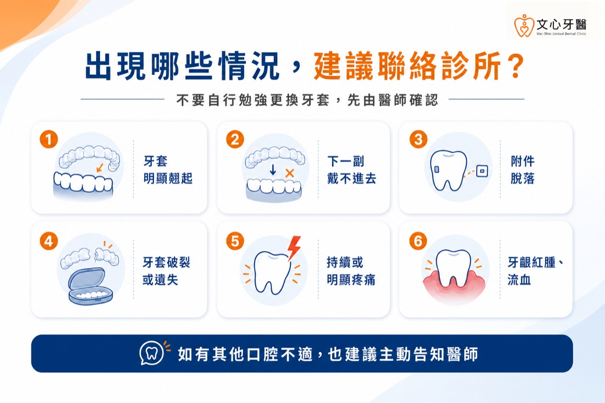

前言
「醫師，隱適美一天要戴多久？整個療程又要多久？」
這是不少準備進行隱形矯正的患者，在第一次來文心牙醫諮詢時會提出的問題。有些人擔心每天需要長時間戴著牙套，影響吃飯或工作；也有人希望先知道大約何時能完成療程，再決定是否開始評估。
不過，「隱適美要戴多久」其實包含兩個不同問題：第一個是每天需要配戴幾小時，第二個是整個矯正療程需要多久，兩者不能混在一起判斷。
一般而言，隱適美牙套每天多半需要配戴約 20～22 小時；至於完整療程，則會依牙齒擁擠程度、咬合問題、需要移動的範圍、配戴配合度及牙齒實際反應而不同。即使兩位患者的牙套副數看起來相近，實際完成時間也可能不同。
因此，不能只用網路上的平均時間或他人的治療經驗，推算自己的完成日期。若正在評估台南隱適美療程，仍應先由醫師完成口腔檢查、數位掃描及必要的影像分析，再依個別治療計畫估算時間。
這篇文章會帶您了解：隱適美每天需要配戴多久、哪些因素會影響完整療程、忘記配戴時該如何處理，以及醫師會如何確認牙齒是否按照計畫移動。
不過，每位患者仍應以醫師提供的配戴指示為準。
睡覺時通常也需要配戴牙套。不要為了補足白天少戴的時間，自行延後更換牙套或一次多戴幾天；是否需要調整更換日期，應先詢問診所。
醫師通常會根據口腔檢查、數位掃描、照片及 X 光等資料，規劃牙齒移動順序與初步療程時間。療程開始後，仍須透過定期回診確認牙套密合度與牙齒移動狀況，必要時調整計畫。
數位模擬可協助醫師與患者溝通治療方向，但模擬畫面及初步預估日期不是結果保證。實際療程仍會受到牙齒反應、口腔健康與配戴狀況影響。
若不確定自己的齒列狀況是否適合，可先參考「台南隱適美適合哪些人」的評估重點，再由醫師進行正式判斷。
部分患者可能需要鄰接面修磨、附件、橡皮筋或其他輔助方式；某些情況也會評估是否需要拔牙。不同治療設計會影響牙齒移動順序，因此是否拔牙不能只用「會不會讓療程變久」決定。
即使兩位患者的牙套副數相同，完整療程時間也不一定一樣。除了每副牙套的更換週期不同，療程中也可能需要額外掃描、調整或製作修正牙套，因此「牙套有幾副」不能直接等同於確切完成日期。
不建議自行跳到下一副牙套、任意延長更換週期，或強行壓入不合的牙套。醫師可能會依停戴時間、目前密合度與牙齒狀況，決定繼續原牙套、調整更換日期，或安排回診檢查。
如果經常因工作、飲食或生活作息而無法達到建議配戴時間，也應在諮詢或回診時主動告知醫師。矯正方式除了考量牙齒條件，也需要符合患者能長期配合的生活狀況。
配戴期間若出現以下情況，建議主動聯絡診所：
👉 隱適美需要拔牙嗎？哪些情況需要、哪些不用？醫師完整解析
👉 第一次諮詢隱適美會做什麼？一定要 3D 口掃、拍 X 光嗎？
👉 台南隱適美 vs 傳統牙套差在哪？療程時間與適合族群比較
👉 台南隱適美價格怎麼算？費用差異、評估流程與常見問題
「醫師，隱適美一天要戴多久？整個療程又要多久？」
這是不少準備進行隱形矯正的患者，在第一次來文心牙醫諮詢時會提出的問題。有些人擔心每天需要長時間戴著牙套，影響吃飯或工作；也有人希望先知道大約何時能完成療程，再決定是否開始評估。
不過，「隱適美要戴多久」其實包含兩個不同問題：第一個是每天需要配戴幾小時，第二個是整個矯正療程需要多久，兩者不能混在一起判斷。
一般而言，隱適美牙套每天多半需要配戴約 20～22 小時；至於完整療程，則會依牙齒擁擠程度、咬合問題、需要移動的範圍、配戴配合度及牙齒實際反應而不同。即使兩位患者的牙套副數看起來相近，實際完成時間也可能不同。
因此，不能只用網路上的平均時間或他人的治療經驗，推算自己的完成日期。若正在評估台南隱適美療程，仍應先由醫師完成口腔檢查、數位掃描及必要的影像分析，再依個別治療計畫估算時間。
這篇文章會帶您了解：隱適美每天需要配戴多久、哪些因素會影響完整療程、忘記配戴時該如何處理，以及醫師會如何確認牙齒是否按照計畫移動。
本文重點
閱讀本文前，可以先掌握以下四個重點：- 隱適美牙套每天通常建議配戴約 20～22 小時，實際仍須依醫師指示。
- 每日配戴時數與完整療程時間是兩個不同概念，不能直接混為一談。
- 牙齒與咬合問題、移動範圍、配戴習慣、牙套密合度及口腔健康，都可能影響療程進度。
- 初步預估時間不是完成保證，仍須透過定期回診確認牙齒移動狀況。
隱適美一天要戴多久？
隱適美牙套每天通常建議配戴約 20～22 小時，原則上只有吃飯、飲用熱飲或含糖飲料、刷牙及使用牙線時取下。不過，每位患者仍應以醫師提供的配戴指示為準。

※隱適美每天通常建議配戴約 20～22 小時，吃飯與清潔牙齒時取下；實際仍請依醫師指示。
隱形牙套必須戴在牙齒上，才能依治療計畫持續施力。若每天取下過久或經常忘記戴，牙齒可能無法跟上原先規劃的移動進度，也可能影響下一副牙套的密合度。睡覺時通常也需要配戴牙套。不要為了補足白天少戴的時間，自行延後更換牙套或一次多戴幾天；是否需要調整更換日期，應先詢問診所。
隱適美完整療程通常需要多久？
隱適美療程沒有適用所有人的固定時間。依 Invisalign 官方衛教資料，成人平均參考時間約為 12～18 個月，但較簡單或較複雜的情況可能低於或超過這個範圍，因此不能只用平均值推估自己的完成日期。醫師通常會根據口腔檢查、數位掃描、照片及 X 光等資料，規劃牙齒移動順序與初步療程時間。療程開始後，仍須透過定期回診確認牙套密合度與牙齒移動狀況，必要時調整計畫。
數位模擬可協助醫師與患者溝通治療方向，但模擬畫面及初步預估日期不是結果保證。實際療程仍會受到牙齒反應、口腔健康與配戴狀況影響。
哪些因素會影響隱適美療程時間？
療程時間主要取決於問題複雜度、牙齒需要移動的距離、配戴狀況，以及治療期間是否需要調整計畫。常見影響因素包括以下幾項。
※牙齒與咬合、移動範圍、配戴習慣、牙套密合度及口腔健康，都可能影響隱適美療程時間。
1. 牙齒排列與咬合問題
輕微牙縫或局部排列問題，與明顯牙齒擁擠、深咬、開咬、錯咬等情況，需要處理的範圍不同。若涉及較複雜的上下顎關係或多方向牙齒移動，通常需要更完整的規劃與追蹤。若不確定自己的齒列狀況是否適合，可先參考「台南隱適美適合哪些人」的評估重點，再由醫師進行正式判斷。
2. 牙齒移動範圍與治療設計
矯正不是單純把外觀看起來不整齊的牙齒排直。醫師還需要考量牙根位置、牙弓空間、咬合接觸及整體穩定性。牙齒移動的數量、方向與距離，都可能影響所需時間。部分患者可能需要鄰接面修磨、附件、橡皮筋或其他輔助方式；某些情況也會評估是否需要拔牙。不同治療設計會影響牙齒移動順序，因此是否拔牙不能只用「會不會讓療程變久」決定。
3. 配戴習慣是否穩定
隱適美可以自行取下，生活安排較有彈性，但也更仰賴患者配合。若長時間未配戴、經常忘記戴回，或沒有按照醫師指示更換牙套，可能讓實際進度落後於原先計畫。4. 牙套是否持續密合
牙套應依計畫貼合牙齒。若出現明顯縫隙、牙套翹起、附件脫落或下一副無法順利戴入，可能代表需要檢查，而不是自行勉強更換。5. 口腔健康與牙周組織狀況
每個人的牙齒移動反應不同。蛀牙、牙齦發炎、牙周問題或其他口腔治療需求，也可能使醫師需要先處理健康問題，再決定是否繼續原有進度。每一副隱適美牙套要戴幾天？
每副牙套的更換週期應依醫師安排，不能自行用網路上的天數套用。醫師會根據牙齒移動計畫、牙套密合度與實際反應，決定何時更換下一副。即使兩位患者的牙套副數相同，完整療程時間也不一定一樣。除了每副牙套的更換週期不同，療程中也可能需要額外掃描、調整或製作修正牙套，因此「牙套有幾副」不能直接等同於確切完成日期。
👨⚕️ 醫師提醒
每副牙套的更換天數與整體療程時間，都可能因個別治療計畫與牙齒反應而調整。請勿自行提前更換、延長使用或跳過牙套；若出現明顯不密合、附件脫落，或曾長時間未配戴，應先聯絡診所，由醫師確認後續安排。吃飯、刷牙時取下牙套，時間怎麼安排？
用餐及刷牙時可以取下牙套，但應留意一天累積的取下時間。若每餐取下過久，再加上喝飲料、聚餐或忘記戴回，很容易低於醫師建議的配戴時數。
※隱適美每日配戴約 20～22 小時，用餐與刷牙時短暫取下，完成後應盡快戴回。
可用以下方式協助維持配戴習慣： - 取下牙套後立即放入專用收納盒，避免用衛生紙包裹而遺失。
- 用餐後依醫師指示清潔牙齒與牙套，完成後盡快戴回。
- 記錄每天取下牙套的時間，了解自己是否經常配戴不足。
- 外出時攜帶牙套盒與基本口腔清潔用品。
- 長時間聚餐、旅行或重要活動前，可先詢問診所如何安排。
忘記戴隱適美或配戴時間不足怎麼辦？
若只是短時間忘記配戴，發現後可先戴回原本牙套，並確認是否仍能正常密合；若已經長時間未戴、牙套明顯不合、無法完整就位或產生異常不適，應聯絡診所確認。不建議自行跳到下一副牙套、任意延長更換週期，或強行壓入不合的牙套。醫師可能會依停戴時間、目前密合度與牙齒狀況，決定繼續原牙套、調整更換日期，或安排回診檢查。
如果經常因工作、飲食或生活作息而無法達到建議配戴時間，也應在諮詢或回診時主動告知醫師。矯正方式除了考量牙齒條件，也需要符合患者能長期配合的生活狀況。
如何知道隱適美療程有沒有照進度進行？
不能只靠牙齒外觀看起來是否變整齊判斷進度。醫師會綜合檢查牙套密合度、附件狀況、牙齒排列、咬合接觸與口腔健康，再判斷是否按原計畫進行。配戴期間若出現以下情況，建議主動聯絡診所：
- 牙套持續翹起或與牙齒間有明顯空隙
- 下一副牙套無法完整戴入
- 附件脫落
- 牙套破裂、變形或遺失
- 持續或明顯疼痛
- 牙齦紅腫、流血或其他口腔不適

※若牙套明顯翹起、無法順利戴入、附件脫落、牙套破裂或出現口腔不適，建議主動聯絡診所。
定期回診的目的不只是領取下一批牙套，也包含確認牙齒是否依規劃移動，以及是否需要調整療程。 常見問題（FAQ）
Q1：隱適美每天少戴一、兩個小時有關係嗎？
每天通常建議配戴約 20～22 小時，實際仍依醫師指示。偶爾一次取下較久不等於療程一定失敗，但若經常配戴不足，可能影響牙齒移動及牙套密合度。若不確定是否需要延後換牙套，應詢問診所。Q2：隱適美睡覺時也要戴嗎？
通常需要。若睡覺時取下，容易使每日配戴時間不足。除非醫師另有指示，夜間應持續配戴。Q3：牙套戴得越久，牙齒就會移動得越快嗎？
不一定。按照醫師指示穩定配戴有助於療程進行，但不能自行縮短每副牙套的使用天數或提早更換。牙齒移動需要適當力量與時間，過度加快不代表更安全或更有效。Q4：牙套副數可以直接算出完成日期嗎？
不能完全直接換算。療程中可能因牙齒實際反應、密合度或咬合調整而增加修正階段，所以初始牙套副數與預估日期都應視為療程規劃的一部分，而不是完成保證。Q5：隱適美療程結束後就不用再戴牙套了嗎？
矯正完成後，通常仍需要依醫師指示配戴維持器，協助維持牙齒位置。維持器的類型與配戴時間，應依個別治療結果及醫師安排。Q6：重要活動可以暫時不戴隱適美嗎？
隱形牙套可以暫時取下，但仍需兼顧當日整體配戴時間。若預期會長時間取下，建議事前詢問醫師，不要自行更改換牙套日期。延伸閱讀
如果您正在了解隱適美療程，建議也可以閱讀以下文章：👉 隱適美需要拔牙嗎？哪些情況需要、哪些不用？醫師完整解析
👉 第一次諮詢隱適美會做什麼？一定要 3D 口掃、拍 X 光嗎？
👉 台南隱適美 vs 傳統牙套差在哪？療程時間與適合族群比較
👉 台南隱適美價格怎麼算？費用差異、評估流程與常見問題
台南隱適美療程時間，應從完整評估開始
隱適美每天通常需要配戴約 20～22 小時，但整個療程要多久，不能只看牙套副數，也不能直接套用他人的經驗。牙齒與咬合問題、移動範圍、口腔健康及配戴配合度，都會影響實際進度。預約台南隱適美療程評估
實際配戴時數、更換週期與完整療程，仍須依牙齒、咬合、口腔健康及治療期間的反應評估。若您正在了解台南隱適美，可由醫師完成口腔檢查與影像資料分析後說明。
本文為一般口腔衛教資訊，不能取代醫師診斷。實際適應症、配戴方式、療程時間與結果，須依個別檢查及醫師治療計畫而定。